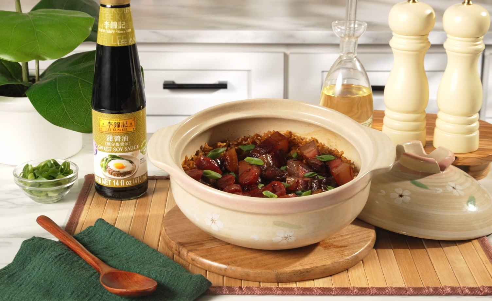
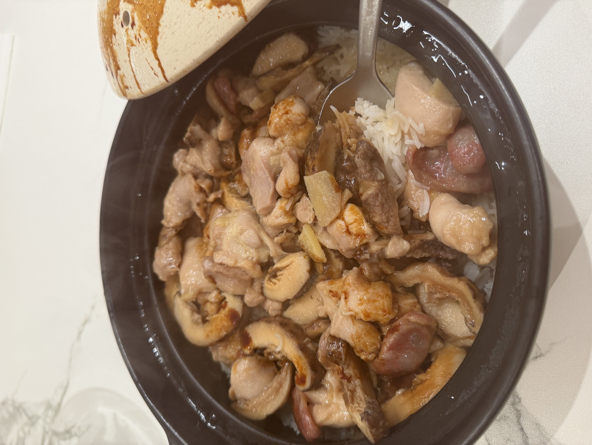

The bottle that transforms a good clay pot rice into a great one. A Cantonese pantry staple for over a century.

There are dishes that have a specific sauce, and clay pot rice is one of them. You can finish 煲仔飯 with regular soy sauce — but it will taste flat, sharp, and unfinished. Lee Kum Kee's Sweet Soy Sauce is pre-balanced: slightly thickened, gently sweet, with a roasted soy depth that was calibrated specifically to pour over hot rice and meld with rendered fat and steam. It is not a shortcut. It is the answer.
Lee Kum Kee (李錦記) was founded in 1888 in Guangdong province — the same region that gave the world dim sum, roast goose, wonton soup, and clay pot rice. Their Sweet Soy Sauce (甜豉油 or 煲仔飯醬油) is a specialized product, distinct from their light or dark soy sauces.
It is richer and more viscous than standard soy sauce, with sweetness from added sugar and caramel depth from caramel color. The result is a sauce that clings to rice grains, seasons them evenly, and delivers both savory and sweet in a single pour — exactly what a finished clay pot needs.
Dark soy sauce (老抽) is intensely salty and used primarily for color. It has no sweetness and would make clay pot rice taste harsh and one-dimensional. Sweet soy sauce has been pre-balanced: less salt, added sugar, and a viscosity that helps it coat every grain evenly as it runs down the sides of a hot clay pot. They are not interchangeable — and using the wrong one will ruin the dish.
Store at room temperature before opening. Once opened, refrigerate and use within 6 months for best flavour. The sauce thickens slightly when cold — bring to room temperature before use if you want it to pour easily around the lid.
The 410ml bottle is the standard size at most Asian grocery stores. If you cook clay pot rice regularly, buy two — you go through it faster than you expect.

The recipe this sauce was made for. Step-by-step with all of Ken's photos →